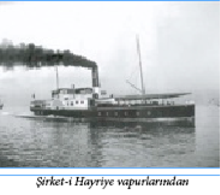

AFFEDİLMEYECEK SUÇ !
Çırağan Baskını sırasında başarısız olarak öldürülen isyan lideri Ali Suavi meslek hayatına öğretmen olarak başlamıştı. 1858 Yılında Simav’da bir medresede hocalık yaptıktan sonra, Bursa’daki rüştiyeye (ortaokul) öğretmen olarak atanır. Batılı tarzda eğitim yapan bir okulda öğretmenlik yapmasına rağmen sarık takmaktadır. Öğretmenlik görevinin yanı sıra, Bursa Ulu Camii’nde vaazlar verir. Tam o günlerde Ali Suavi bölgedeki gericilerin kışkırtmasıyla “istenmeyen adam” ilan edilir ve öğretmenliğe atanmasının üzerinden henüz yedi ay bile geçmeden, Maarif Nazırı’nın (Milli Eğitim Bakanı) emriyle görevinden alınır. Ali Suavi’nin meslekten atılmasına yol açan ‘suç’ ise gerçekten bağışlanamaz niteliktedir: “Bursa’ya gelen yabancı arkeolog bir karı koca ile Yeşil Camii’nin önünde fotoğraf çektirmek”!
GEMİ ENKAZIYLA MAAŞ ÖDEMESİ
İmparatorluğun son devirlerinde, bilhassa İkinci Abdülhamit zamanında ve Meşrutiyet’te memur maaşları her ay düzenli olarak verilemiyordu. Maaşların ödenmesi bir mesele, memurlar içinse âdeta bir bayramdı. Memurların çoğu maaşlarını sarraflara faizle kırdırır, sıkıntı içinde yaşarlardı. En küçük bir kâtipten, vezirine kadar sarrafa borcu olmayan memur yok gibiydi; devlet büyüklerinin kendi özel sarrafları vardı ki tamamı gayrimüslimdi. Rum, Ermeni ve Yahudi olan bu sarraflar o dönemlerde muazzam servetler edinmişlerdir.
II. Abdülhamit zamanında, iki büyük ve eski savaş gemisi, üç ambarlı Mahmudiye gemisi ile bir askerî nakliye gemisi olan Taif vapuru kadro dışı bırakılmış ve tersanede bozularak ahşap ve demir enkazı ayrılmıştı. Bahriye Nazırı (Denizcilik Bakanı) Hasan Paşa da o devrin nüfuzlu kişilerindendi. Maliye hazinesinde para olmadığı için bu iki geminin enkazını, bir müddet bahriye subaylarının ve askerlerinin çıkmayan maaşlarına karşılık olarak kullanmıştı. O günlerde zamanımızın maaş bordroları yerine maaş kağıtları kesilir, Nazır Hasan Paşa da bu kağıtların altına örneğin: “Maaşına karşılık Taif vapurundan 500 okka enkaz verile” diye yazardı. Nazırdan bu emri koparanlar sevinçten âdeta uçardı. Hemen enkazcılara koşarlar, maaş kağıdını derhal paraya çevirtirlerdi. Sonra, o adamlar da tersaneye gelerek topladıkları maaş kâğıtlarının tutarında Taif ve Mahmudiye gemilerinin enkazını kaldırırlardı.
SEN MİSİN FUTBOL OYNAYAN !
II. Abdülhamit döneminde, Amiral Hüseyin Hüsnü Paşa’nın Denizcilik Okulu öğrencisi oğlu Fuat Hüsnü Bey (Kayacan) 1899 yılında Kadıköy takımında “Bobby” takma adıyla futbol oynuyordu, çünkü o zaman Türklerin futbol oynaması da yasaktı. Kısa süre sonra Hariciye Nezareti’nden (Dışişleri Bakanlığı) arkadaşı Reşat Danyal’la birlikte Black Stockings FC (Kara Çoraplılar Futbol Kulübü) adlı ilk Türk futbol takımını kurdular. Devrin hafiyelerinin dikkatini çekmemek için İngilizce bir ad altında gizlenmeyi yeğlediler. Tamamı Türklerden oluşan takımın futbolcuları kendi aralarında birkaç antrenman yaptıktan sonra semtteki ünlü Papazın Çayırı’nda, 26 Ekim 1901’de Rum takımına karşı ilk maçlarına çıktılar. Fuat Hüsnü ve Reşat Danyal beylerden başka Kemani Nuri, Fahri, Hafız Mehmet, Nurettin, Hafız Mustafa, Emcet, Şevki Beyler ile Tamburacı Osman Pehlivan’ın yer aldıkları Black Stockings takımı bu ilk maçında Rum takımına 4-1 yenilirken, tek golü ilk Türk futbolcusu olarak bilinen Fuat Hüsnü Bey atmıştır. Ancak maçın bitmesiyle Kadıköy ve çevresini titreten Hafiye Şamil ve adamları sahayı basmışlardı. Fuat Hüsnü Bey maçı izlemeye gelen babası Hüseyin Hüsnü Paşa’nın faytonuna atlayarak kaçabilmiş, yakalanan diğer kurucu Reşat Danyal Bey ise görevli bulunduğu Hariciye Nezareti tarafından ceza olarak, kâtip rütbesiyle Tahran Elçiliği’ne sürülmüştü. Ancak çok geçmeden Fuat Hüsnü Bey de yakalanıp Divan-ı Harp’e verilmişti. Fuat Hüsnü Bey, “karşılıklı kaleler kurup, Rumlarla aynı elbiseleri giymiş bir halde, top endahtı (atarak) ile talim icra etmek” suçuyla (!) yargılanmış ve işin gerçek yüzünü anlatabilene kadar akla karayı seçmiş, sonunda bir ihtar cezasıyla kurtulabilmişti.
RESMİ PARALARA BASILAN
İLK KADIN YAZARIMIZ
1889’da George Ohnet’in ‘Volonte’ adlı romanını Meram adıyla çevirerek edebi kariyerine başlayan ilk kadın romancımız Fatma Aliye (Topuz) Hanım (1862 – 1936) çevrenin tepkisinden çekindiği için, bu çevirisinde “Bir Hanım” imzasını kullanmıştı. Fatma Aliye’nin bu çabası Ahmet Mithat tarafından Tercüman-ı Hakikat gazetesinde övülünce Fatma Aliye yeni yapıtlar da verdi ama o yapıtlarında “Mütercime-i Meram” (Meram’ın Kadın Çevirmeni) takma adını kullanıyordu. Bugün (2012) kullandığımız 50 TL’lik banknotların arkasında resmi yer alan kadın, Fatma Aliye Hanım’dır.
ÇÖP TOPLAYICI OLAMAZDI
Eski İstanbul’da ‘arayıcı esnafı’ denen bir esnaf sınıfı vardı. Bunlar çöplüklerde, mezbeleliklerde, hatta lağımlarda dolaşır ve oralarda bulduklarını mümkün mertebe temizleyerek eskicilere satar ve geçimlerini öyle sağlarlardı.
Genellikle karınlarını zor doyuran bu insanlardan bazıları ise ara sıra bir çöplükte yanlışlıkla atılmış değerli bir eşya, hatta bir lağımda yüzük, küpe vs. çok değerli bir eşya bulurlar, o zaman da bir süreliğine çok rahat bir hayat yaşarlardı. Bugünkü hurdacılara benzer bir iş yapan bu esnaf da diğer tüm esnaf grupları gibi belli bir düzen içinde çalışırdı ve canı her isteyen arayıcı olamaz, ancak yeni bir esnafa yer açıldığı zaman ve esnaf loncasının izniyle arayıcı olunabilirdi.
VAPURSORAN AYŞE HANIM
19. yüzyıl sonlarında Davutpaşa, İsakapısı ve Etyemez semtleri civarında dolaşan meczup bir kadıncağız vardı. Tahminlere göre sürgüne gönderilen oğlunun bir daha dönmemesi üzerine aklını yitirmiş olan bu kadının en büyük özelliği gördüğü herkese “Vapur geldi mi?”, “Birazdan vapur gelir, değil mi?” veya “Vapur ne zaman gelecek?” gibi sorular sormasıydı. Adını kimsenin kesin olarak bilmediği bu kadına o zaman mahalle halkı Vapursoran Ayşe Hanım adını yakıştırmıştı.
DELİ DELİYİ GÖRÜNCE…
II. Abdülhamit zamanında İstanbul’da Çıplak Mustafa ile Madam Opala isminde iki meşhur deli vardı. Mustafa Fatih taraflarında, Madam Opala’da Beyoğlu’nda otururdu. Erkek, lakabı üstünde, yaz ve kış anadan doğma çırılçıplak dolaşırdı. Madam Opala’ya gelince bütün gardırobu üstündeydi: Kat kat fistanlar giyer, başına üst üste şapka koyardı. Bu iki deli ne zaman karşılaşsalar saç saça baş başa kavga ederler ve bu kavgadan pek tabii, Madam Opala zararlı çıkardı. Abdülhamit her iki delinin köprülerden geçmesini yasak etmiş ayrıca, kardeşini evde hapsetmesi şartıyla Çıplak Mustafa’nın ablasına maaş bağlamıştı.
SİGARA İÇİN ŞİİR YAZILAN GÜNLER
II. Abdülhamit devrinde tütün tiryakilerinin en çok rağbet etiği sigara kağıdı Seferoğlu ailesinin ürettiği Bafra sigara kağıdı idi. Aynı adı taşıyan filtresiz Bafra sigarası ise 1970’li yılların sonuna kadar Türkiye’de tiryakilerin en sevdiği filtresiz sigara idi. İstanbul Ansiklopedisi’nin belirttiğine göre, diğer sigara kağıtlarının 5 ila 10 paraya satıldığı devirde Bafra sigara kağıdının fiyatı 20 paraymış. Bafra sigara kağıdının kapağında ise (bugünkü uygulamalarla pek çatışacak bir biçimde) tütünü öven şu beyitler yazılıymış:
Kırk senedir ben sigara içeli
İyiyi, kötüyü ancak seçeli
Her çeşit kağıdı istimal ettim (kullandım)
Bafra kağıdında ben karar verdim
Her türlü muzır mevaddan âri
(Her türlü zararlı cisimden temiz)
Pirinçten mamuldür yaprağı zarı
Ta sonuna kadar söndürmez nârı (ateşi)
Bir cigara yap da görürsün bari
Ol sebepten başka kağıt içemem
(O neden dolayı başka kağıt içemem)
Seferoğlu Bafrası’ndan vazgeçemem
EN TALİHSİZ PADİŞAH
622 yıl hüküm süren Osmanlı İmparatorluğunun 36 padişahından biri olan Sultan V. Murat en kısa süreyle tahtta kalan ve hatta Eyüp Sultan Camii’nde kılıç kuşanma töreni yapılmayan tek padişahtır. Büyük umutlarla tahta çıkarılmış ama üç ay sonra da indirilmiştir.
VAHDETTİN’İN TALİHİ Mİ, TALİHSİZLİĞİ Mİ?
V. Mehmet Reşat Osmanlı padişahı olduğunda, Abdülaziz’in oğlu Yusuf İzzettin Efendi veliahttı. Yaş olarak da VI. Mehmet Vahdettin’den büyüktü. Ama işe bakın ki, Yusuf İzzettin’in beklenmedik ölümü üzerine (Zincirlikuyu’daki köşkünde ölü bulunmuştur) tahta geçme sırası VI. Mehmet Vahdettin’e geçti ve Vahdettin, Osmanlı’nın son padişahı olma talihsizliğini yaşadı.
Yusuf İzzettin Efendi döneminde şehzadelerin tahta çıkana kadar çocuk sahibi olmamaları kuralı geçerliydi ve Efendi bu kurala aykırı olarak doğmuştu. Bu nedenle babasının tahta çıktığı 1861 yılına kadar dört yıl boyunca varlığı herkesten gizlendi.
300 YAŞINDA BİR ÖRÜMCEK
Reşat Ekrem bize İstanbul Ansiklopedisi’nden bir bilgi daha aktarıyor, ama efsane niteliği çok net bir bilgidir bu:
“II. Abdülhamit zamanında Galata’da “Levirentos” ismindeki 17. yüzyıldan kalma bir tektekçi meyhanesinin mahzenindeki boş bir şarap fıçısının içinde gayet büyük ve süt gibi beyaz bir örümcek bulunmuş ve o zamanlar bu hayvanın 300 yaşında olduğu tahmin edilmişti…”37
37 Örümceklerin ömrünün genelde bir yılı geçmediği, bazı tarantula türlerinin ise en fazla yirmi yıl yaşadığı göz önüne alınırsa, bu rakamın mantık dışı olduğu ortaya çıkacaktır…
OSMANLI USULÜ BEDELLİ ASKERLİK
Eski zamanlarda, tersane havuzlarına gemi alınınca, havuzların suyu makinelerle değil, gayet büyük bostan dolaplarıyla boşaltılırdı. Havuzların yanı başında bulunan bu dolaplara da “havuz dolabı” adı verilirdi ve dolaplara da mandalar koşulurdu. Bu dolaplara genel bir âdet olarak, Kürt neferler gözcülük ederdi. Bu neferlere “Mandacı”, ağalarına da “Manda Ağası” denirdi. Türkiye’de zorunlu askerliğin kabulünden çok sonraları dahi tersanelerde bu dolaplar ve mandalar kullanılmıştır. Vatandaşlara zorunlu askerliğin kabulünden sonra; kurası tersaneye düşen kişiler arasında askere gitmeyip bedel verecekler için, para bedeli yerine ‘mandalı bedel’ kabul edilmişti. Yani, askerliğini denizci olarak yapacak olan bedelliler kendi yerlerine havuz dolaplarına bir manda gönderirlerdi. Sahibinin yerine hizmet süresini dolduran mandaların boynuzları yaldızlanır, askerden terhis kağıtları da sırmalı kordonlarla boynuzlarının arasına asılırdı. Sahibine törenle teslim edilen “terhis olmuş mandalar” gittikleri köyde, kasabada da (tıpkı askerden dönen gençler gibi) davullu zurnalı törenlerle karşılanırdı…
BURADA HEPİMİZ HAYVANIZ!
Sultan II. Abdülhamit zamanında bir nüfus sayımı yapılması kararlaştırılır. Yabancı elçiler sultana hazır sayım yapılırken bir de mevaşî (besilik hayvan) sayımı yapılmasını tavsiye ederler. Sultan insanlar ile hayvanların aynı sistem içinde ve eş zamanlı olarak sayılmasının onur kırıcı olduğunu belirterek mevaşî sayımının daha önce yapılmasını uygun görür. Bunun için vilayet ve kazalara telgraflar gönderilir. Meğer bir kazanın kaymakamı o sırada izinde imiş. Vekâlet eden zat alaydan yetişme, kaymakamla hiç geçinemeyen cahil bir adammış. “Mevaşî” kelimesinin ne anlama geldiğini bilmediği gibi, araştırmaya dahi ihtiyaç durmamış. Onu “üstün gayret sahibi vatandaş” falan zannetmiş olsa gerek ki, telgraf metnini okuduktan sonra “Bunun ucunda yine ya bir nişan, ya bir taltif vardır! İhsan-ı şahaneyi bu sefer de ben kapayım.” diye hemen bir cevap telgrafı yazıp göndermiş:
“Ser-kurenâ-yı hazret-i padişahîye, maruzat-ı kemînelerimizdir: Burada kaymakamdan başka hepimiz mevaşiyiz!” (Padişah hazretlerine aciz arzımızdır: Burada kaymakamdan başka hepimiz hayvanız!)
BU DA İSTANBULLU DİYOJEN!
20. yüzyılın başlarında Moda taraflarında bir fıçı içinde yaşayan, bu nedenle de herkesin “Diyojen Ali Bey” dediği ayyaş bir balıkçı vardı. O zaman 45 yaşlarında olan bu adam gece gündüz sarhoş gezerdi, ama kimseye sataştığı veya kimsenin kalbini kırdığı görülmemişti. Bu nedenle mahalle halkı Diyojen Ali Bey’i çok severdi. Lodoslu bir fırtına gecesi dev dalgalar Diyojen’in sahildeki fıçısını kapıp da denize götürdüğünde birkaç balıkçı canlarını tehlikeye atarak denize açılmış ve fıçıyı sahile getirmeyi başarmışlardı. O anda gördüler ki fıçıda hâlâ uyumakta olan Diyojen ayağa fırlamış ve kendini kurtaran balıkçılara şöyle bağırıyordu: “Ne var? Biri denize mi düştü? Atlayalım, hemen kurtaralım!”
PEHLİVANIN ACI SONU
Ünlü Türk pehlivan Kara Ahmet 1899’da Paris’te dünya şampiyonluğunu kazanarak memlekete döndüğü zaman dillere destan olmuştu. Koca Yusuf da Amerika’ya gittiğinden İstanbul’da hemen hemen rakipsiz kalmıştı. Üstelik İstanbul’a bir de gelin getirmişti. Asıl adı Janet olan bu Fransız kızı bizim kara yağız pehlivana âşık olmuş, onunla evlenmişti. Türkler de onun adını Cennet Hanım diye Türkçeleştirmişlerdi.
Kara Ahmet 24 Şubat 1902 günü, Aksaray’da, Yeşil Tulumba’da bir kahvehanede otururken kalp sektesinden ölmüştü. Kriz esnasında kahvehane bahçesinin etrafındaki demir parmaklıklara sarılmış ve dokuz demir çubuğu hamur gibi birbirine geçirmişti. Büyük pehlivanın ölümünden sonra bu demir çubuklardan birini bile eski haline getirmek mümkün olmamıştı.
Ölüm sonrası hükümet doktorları Şevket ve İsmail Beylerin muayenesi ile “kalp yetmezliğinden ölüm” raporu verilmiş. Ertesi sabah da Eyüp Sultan mezarlığına gömülmüş. Aynı günün akşamı mezarlıktan gelen sesler ve çalışanlarının anlattıkları karşısında şüpheye düşen yetkililer mezarın açılması talimatını vermiş ve ortaya çıkan görüntü şok etkisi yaratmış. Naaşı tekrar muayeneye gönderilen Kara Ahmet’in aslında kalp krizinden ölmediği, geçirdiği zatürre krizi nedeniyle bayıldığı anlaşılmış. Yani Kara Ahmet alelacele gömüldüğü için aslında diri diri gömülmüş, sonradan ayılınca da dışarı çıkamayıp korkudan veya havasızlıktan ölmüştü!
TAMBURÎ’NİN REDDETTİĞİ SERVET
Klasik Türk müziğinin en büyük saz sanatçılarından biri olan Tamburi Cemil Bey 1908 yılı sonuna doğru İstanbul’da plak işi yapan en büyük firma, Odeon plak fabrikasının Türkiye acentesi Blumentahl kardeşlerin stüdyosunda 100 Napolyon altını karşılığında plak yapmak için anlaşma yapar. O zamanın koşullarında küçük bir servettir bu para. Ama konuşmanın ertesi günü gidip tüm anlaşmayı iptal eder. Paranın daha fazla artırılabileceği önerilse bile bunu kabul etmez. Çünkü eserlerin bu kayıtlarla zorlama bir sesle kaydedildiğini ve istenilen kalitenin alınamayacağını düşünüyordu.
Bir süre sonra Tamburi Cemil Bey aralarında Hacı Arif Bey, Şehzade Ziyaeddin Efendi, Udi Sami, Udi Şefki, Kemani Salih, Kemani Ağa, Kemani Kirkor, Leon Hancıyan Efendi, Edhem Efendi gibi birçok müzisyenle birlikte Ragıp Paşa Kütüphanesi’nin karşısında “Dar-ül Musiki-i Osmanî Meşkhanesi” adını verdikleri bir yer kiralarlar. Kuruluşun amacı sağda, solda darmadağınık, bilgisiz ellerde ve dillerde bozulup kaybolma yolundaki musikiye ellerinden geldiğince sahip çıkmaktır. Çalışma şekli ise eserlerin yeni baştan gözden geçirilmesi ve eksiklerinin giderilmesidir. Çalışmaları Pazartesi günleri Şehzade Ziyaeddin Efendi tarafından yönetilmek suretiyle karar alırlar. 26 Ekim 1914’te Şehzadebaşı’nda Dar-ül Bedaî binasında da bir konservatuar açarlar. Bu binanın açılışında Dâr-ül Aceze musiki grubu tarafından bir konser verilir, bir de temsili tiyatro gösterisi yapılır. Bu amatör tiyatro gösterisinden sonra oyuncuların en gençlerinden biri, işçi elbiseli, 17 yaşında bir genç gelip Tamburi Cemil Bey’in elini öper ve kendini takdim eder: “Merhaba Cemil Bey. Bendeniz tiyatro sanatına gönül vermiş biriyim. Adım Muhsin Ertuğrul.” Tahmin ettiğiniz gibi bu genç, sonraki yıllarda önce Türk tiyatrosunun, ardından da Türk sinemasının en önemli sanatçılarından biri haline gelecek olan oyuncu-yönetmen Muhsin Ertuğrul’dur…
MAĞRUR OLMA PADİŞAHIM!
Eski zamanlarda Osmanlı padişahları Cuma namazından döndükleri zaman saray halkı tarafından tiz perdeden söylenen şu sözlerle alkışlanırlardı: “Uğurun hayrola, yaşın uzun ola, yolun açık ola! Saltanatına mağrur olma padişahım, senden büyük Allah var!” Uzun yıllar böyle devam eden bu sözlerin son cümleleri Sultan II. Abdülhamit döneminde “Padişahım, şevketinle, devletinle bin yaşa!” biçiminde değiştirilmişse de Meşrutiyet’in ilanından sonra sözler yine eski haline dönmüştür.
AŞURE BAKLASI
Esli İstanbul âdetlerinden birine göre, aşure yenirken ağza gelen ilk bakla yutulmayıp çıkarılır ve yıkanıp kurutulduktan sonra bereket getirsin diye para kesesinin içine konurdu. Bu baklaya da “aşure baklası” denirdi.
Bir başka aşure âdetine göre de, aşure pişirilen tencerenin içine iple bağlanmış birkaç tane ortası delikli para sarkıtılırdı. Aşure piştikten sonra bu paralar yıkanır ve bereket getirsin diye para kesesinin dibine yerleştirildi. Bu paralara da “aşure parası” denirdi.

SULTAN ABDÜLHAMİT VE SON MOHİKAN
II. Abdülhamit uyku sıkıntısı çektiği için geceleri kendisine kitap okutuyordu. Bu görevi Türkiye’deki ilk mizah dergisi sayılan ‘Diyojen’i çıkaran, polis romanları ve gizemli öyküler de yazan Teodor Kasap üstlenmişti. Sultan’ın en sevdiği kitapların başında da Sherlock Holmes’un maceraları geliyordu. Kasap’ın bir gece okumak için seçtiği Fenimore Cooper’ın “Mohikanlar’ın Sonuncusu” adlı kitabı Abdülhamit’in çok ilgisini çekmiş, hemen uyumak bir yana, geç saatlere kadar gözünü kırpmamıştı.
Kitaptan çok etkilenen Abdülhamit soyları tükenen Mohikanlar’dan bir çifti İstanbul’a getirtmek ve nüfuslarının burada artmasını sağlamak için harekete geçti. Yıldız Sarayı bahçesinde onlar için yer bile hazırlattı. Devreye yakın dostu olan, İstanbul’daki Birleşik Amerika Büyükelçisi Lew Wallece’ı soktu. Abdülhamit’e yakınlığıyla tanınan General Wallece aynı zamanda ünlü “Ben Hur” romanının yazarıydı.
Wallace padişahın ısrarlı tutumu karşısında, bu konuyu dönemin önemli Amerikalı gazetecilerinden, meşhur röportaj yazarı Gordon Bennett’ın halledebileceğini söyledi. Ancak Bennett’tan gelen haber kötüdür: Ünlü yazar “Şu anki Amerikalı Kızılderililerin Cooper’ın romanındakiyle hiçbir ilgisi kalmamıştır. Artık saf kan yerli bulmak da mümkün değildir” deyince, Abdülhamit’in Mohikan neslini İstanbul’da sürdürme hayali sona erer.
Ancak aynı dönemde Abdülhamit’in en önemli muhaliflerinden biri de Mohikanlar’a hayranlık beslemektedir. Abdülhamit bir çift Mohikan için çabalarken, Şair Tevfik Fikret de oğlu Haluk için yaptığı kayığın burnuna kendi elleriyle “Hayatwatha” yazmaktadır. Bu, hızlı koşmasıyla ünlü bir Mohikan reisinin adıdır…